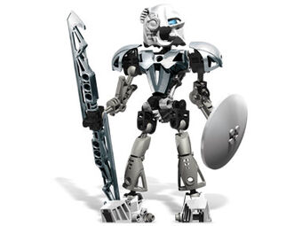

Kopaka controlled the element of Ice. He wore the Kanohi Akaku, the Mask of X-Ray Vision, and wielded an Ice Sword and an Ice Shield.

Kopaka was serious, cold and analytical. He was a loner, preferring to go solo instead of teaming up. He would often be in rivalry with Tahu, their elements reflecting their different and conflicting natures.
Kopaka oftenly displayed his cold side and to many it seemed like it was all there was in him. But if one would take the time to look a little deeper into his character, it would find a loyal guardian with a caring heart who was willing to risk everything to protect his home, Matoran, Turaga, and his brother and sister Toa. He was very protective of the Matoran, thinking that exposing them to danger was not the deed of a responsible Toa.
Pohatu was possibly Kopaka's closest friend; he was the first of the Toa to encounter Kopaka, and when Pohatu was later thought dead, it was the only time Kopaka openly showed emotions.
Kopaka also considers Lewa a good friend, as he worried about the Toa of Air when there was no sign of him on Bara Magna and swore to find his brother.
Unlike some of the other Toa Nuva, Kopaka had changed very little. He still prefered to fight alone, given the opportunity, though he knew it was not a wise tactic against the Makuta. He and Tahu had settled many of their differences and Kopaka filled the role of deputy leader of the team.